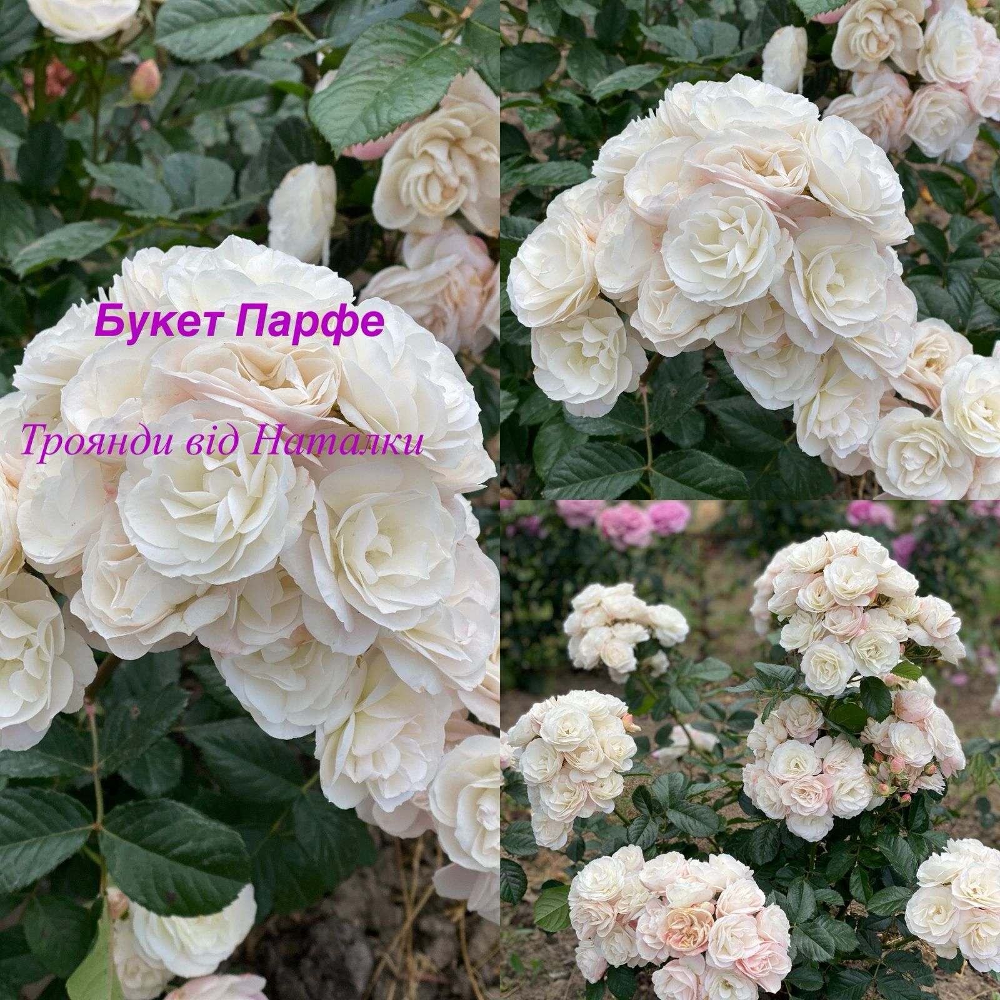
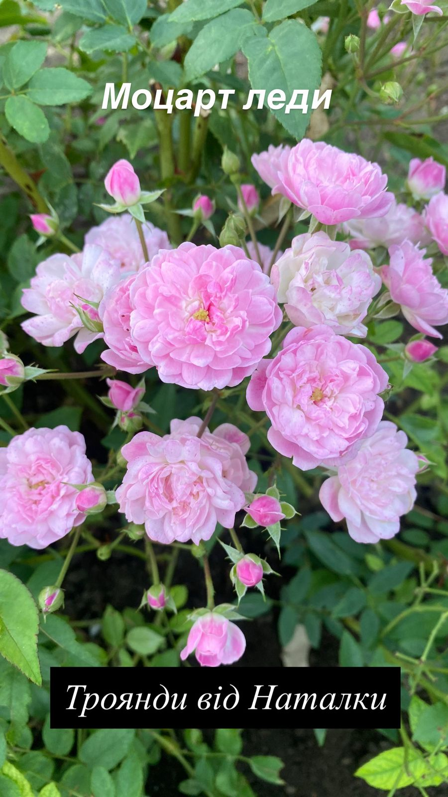
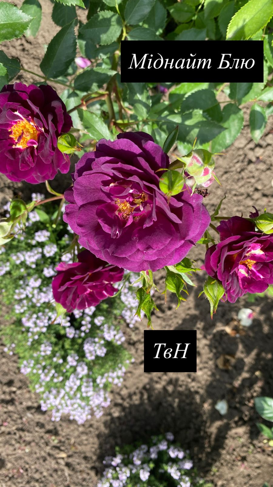
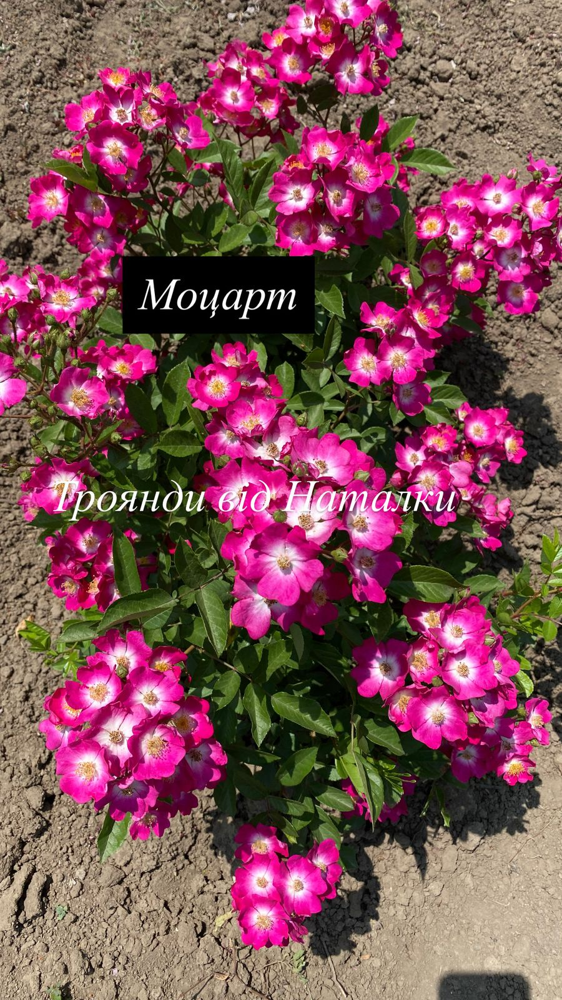
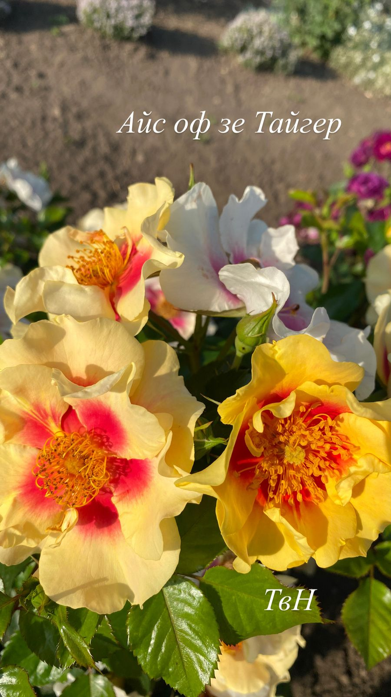
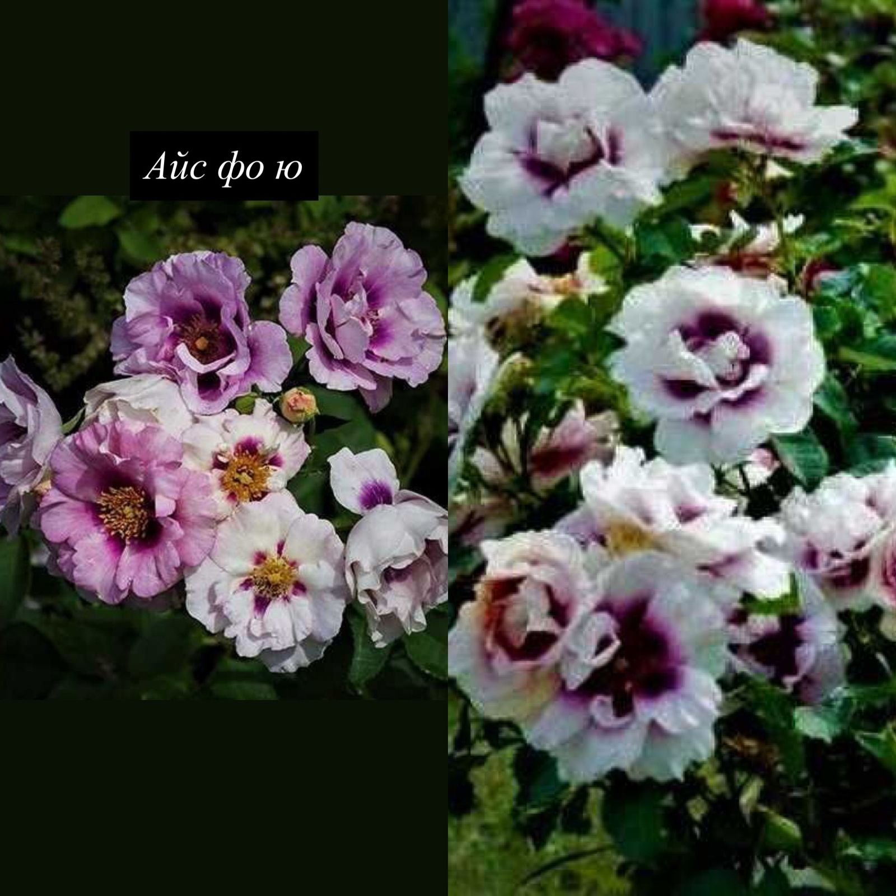
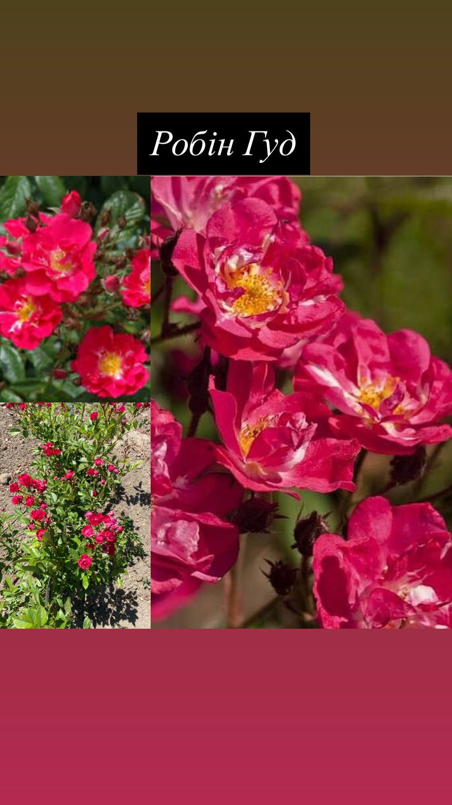
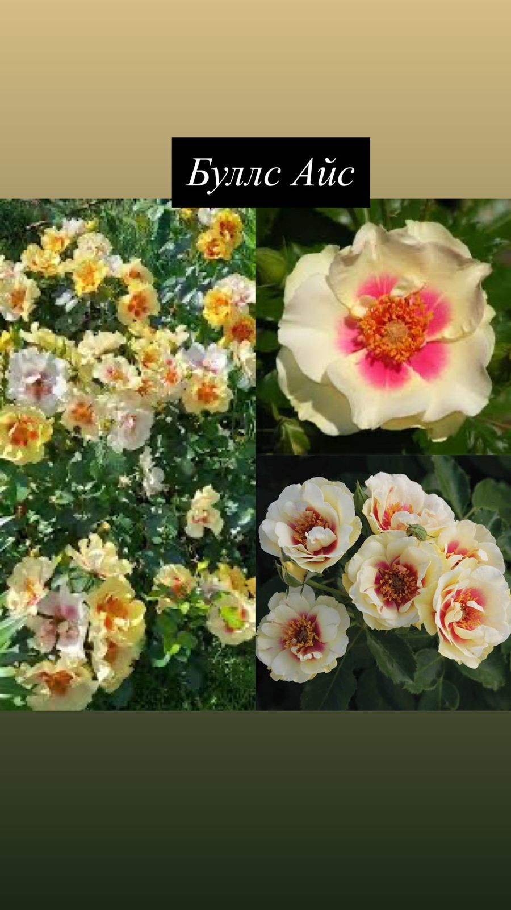

Букет Парфе
Bouquet Parfait Вишукана мускусна троянда з великими суцвіттями густомахрових квітів ніжно-рожевого кольору з кремовим центром. Квітки зібрані у пишні кисті, тримаються довго. Аромат легкий, мускусний. Кущ сильнорослий, до 1,5 м, щільний і рясноквітучий, з високою стійкістю до хвороб.

Моцарт леди
Mozart Lady (Леді Моцарт) Елегантна мускусна троянда з ніжними напівмахровими квітами рожево-малинового кольору з білим центром. Квіти зібрані у великі кисті, цвітіння триває до пізньої осені. Аромат делікатний. Кущ розлогий, до 1,2 м, чудово виглядає у ландшафтних композиціях.

Міднайт Блю
Midnight Blue Оригінальна троянда з глибоким пурпурово-фіолетовим відтінком квітів, які мають хвилясті пелюстки і виглядають дуже ефектно. Аромат сильний, з нотами спецій і мускусу. Кущ до 80–100 см, густий, добре гілкується, підходить для контрастних акцентів у саду.

Моцарт
Mozart Класичний представник мускусних гібридів з дрібними напівмахровими квітами яскраво-рожевого кольору з білим центром. Квіти зібрані у великі кисті, дуже декоративні. Аромат легкий. Кущ високий, повітряний, до 1,5 м, рясно цвіте з початку літа до осені.

Айс оф зе Тайгер
Eyes of the Tiger (Айз оф зе Тайгер) Незвичайна троянда з відкритими квітами яскраво-жовтого кольору з контрастним бордовим центром. Квіти середнього розміру, зібрані в кисті. Аромат мускусний, з легкою пряністю. Кущ компактний, до 80 см, добре підходить для бордюрів і контейнерів.

Айс фо ю
Eyes for You (Айс фо Ю) Екзотична троянда з лавандовими квітами і яскраво-фіолетовим “оком” в центрі. Квіти напівмахрові, з приємним мускусно-фруктовим ароматом. Кущ до 1 м, компактний, з хорошим повторним цвітінням. Один з найефектніших мускусних гібридів.

Робін Гуд
Robin Hood (Робін Гуд) Життєрадісна мускусна троянда з дрібними малиновими квітами, зібраними у великі суцвіття. Квіти прості, з жовтими тичинками, які надають особливої легкості. Аромат свіжий, з ледь помітним мускусним відтінком. Кущ високий, до 1,5 м, рясно квітне і підходить для живих огорож.

Буллс Айс
Bulls Eye (Буллс Айс) Незвичайна троянда з кремово-рожевими квітами та яскравим бордовим центром, що створює виразний «окообразний» ефект. Квітки середнього розміру, зібрані в суцвіття. Аромат мускусний. Кущ до 90 см, акуратний, з хорошою стійкістю до хвороб.

Пінк Просперіті
Pink Prosperity (Пінк Просперіті) — чарівна мускусна троянда, що вражає рясним цвітінням і ніжністю відтінків. Її квіти зібрані у великі кисті, складаються з безлічі пелюсток м’якого рожевого кольору з перловим відблиском. Аромат легкий, з нотками фруктів і польових квітів. Кущ розлогий, густий, висотою до 120–150 см, з матово-зеленим листям, стійкий до хвороб і добре переносить дощ. Цвіте хвилями протягом усього літа. Ідеальна для природних садів, живих огорож, а також для ніжних, романтичних букетів.